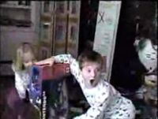
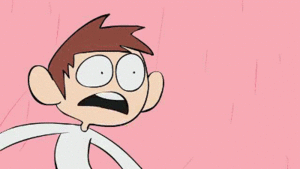

Noentiendo 64 kid
 De: La Frikipedia, la enciclopedia extremadamente seria.
De: La Frikipedia, la enciclopedia extremadamente seria.
| De la serie Superhéroes:
|
| Noentiendo 64 kid
|
| 
|
| ¡OMG! NOENTIENDO SIXTY FOUR
|
|
| Nacimiento:
|
Cuando la Noentiendo 64 fue inventada
|
| Muerte:
|
Cuando su Noentiendo 64 se rompa
|
| Superpoderes:
|
Los de Mario 64
|
| Debilidad:
|
Wii y PSP
|
| Asistente
|
Sega y Capcom
|
| Notas:
|
Lo mato el Wii Kid
|
«NINTENDO SIXTY FOUUUUUUUUUUR, OOOOOOOHHHHH MMYYYYYY GOOOOOOOOOOOOOOODDDD»
~ N64 Kid teniendo un orgasmo
«YEEEESSSS, YEEEEEEEEEEESSSSSSSSSS, YEEEEEEEEEEEEEESSSS»
~ N64 Kid despues de haber terminado su orgasmo
Superhéroe nacido en el planeta Nintendus 64 en el año $%$%·. No adquiere sus poderes hasta que pasados unos años, consigue una Nontiendo 64 con la cual adquiere unos poderes inimaginables de entrada y salida de la consola y control de personajes.
Biografía
Nace en el año $%$%· (a la par de la invención de la nontiendo 64) en un lejano planeta llamado "Nintendus 64". Creció en este extraño mundo solo y asustado, hasta que es obsequiado con la Nintendo 64 del poder. En ese momento adquiere impresionantes poderes, como entrada y salida de la consola, control absoluto de los personajes, uso de objectos de los susodichos personajes (como los monguis de Mario), etc.
Decide entonces ir a salvar al mundo con su consola a cuestas y su mando en las manos. Derrota a terribles villanos, como Sonic, el erizo diabólico de Sega, o Solid Snake su compinche de la misma marca.
Se prevé su muerte cuando su Nontiendo 64 se rompa, pero por el momento, el final anda bastante lejos... ¿O tal vez no?
La niña de al lado (si, si, la rubia)
Era la ayudante de Noentiendo 64 kid. Aunque salga con él en aquel video, la verdad es que todos se fijaron en el niño y no en ella, lo cuál la hizo enfurecer bastante.
Ella tambien deseaba al igual que su jefe aquel increible juguete, así que decidió retarle en un duelo mortal a una partida de Mario Party 2. Pero él fue más agresivo y la derrotó tras conseguir 50 estrellas más que ella. Después de aquello, se dedicó a ahorrar dinero para una PSone.
Superpoderes
- Usar los champiñones y flores de Mario para crecer y alucinar.
- Usar la Ocarina de Link para volver atrás en el tiempo y encontrar las llaves que ha perdido.
- Usar el cañón de Samus para obligarla a que se desnude para el.
- Usar los truenos de Pikachu para conseguir electricidad gratis.
- Usar a Kirby para mascar chicle y también para utilizarlo como aspiradora.
- Usar los huevos de Yoshi para freírlos y hacerse un festín.
- Usar a Donkey Kong para matar moscas y tener plátanos gratis.
- Usar a Luigi para desatascar cañerías, tuberías, etc.
- Usar a Bowser para proteger su casa.
 Si el niño hubiese sido sonyer (Click para ver el gif)
- Usar a Toad como mayordomo.
- Usar a Fox para atraer a los zorros y hacer una gran batida con sus perros.
- Usar a Jigglipuff para curar el insomnio.
- Usar a Miyamoto para asegurar la longevidad de su consola.
- Usar a Slippy para ayudar a Miyamoto a asegurar la longevidad de su consola.
- Usar su mando de Noentiendo 64 para metértelo por el culo sin que se rompa y/o manche.
- Usar el botón de on/off de la nonentiendo para apagarte y matarte.
- Usar el cable de su consola para electrocutarte en los cojones y dejarte estéril.
- Usar el Rumble Pak como consolador.
- Usar su visión altamente distorsionada por los colores de la consola para transportarte a un universo paralelo al mirarte (y NO, nunca has oído esto antes, y si lo has hecho, olvídalo)
Hechos atribuídos a Nintendo 64 kid
- Luchó contra niño loco alemán por maltratar de tal forma al ordenador, es decir, a su modo de jugar a videojuegos. Después de la batalla, en la cual venció, lo obligó a chupar cada una de las teclas de su teclado roto...
- El modelo original de la Noentiendo DS es una copia de un zurullo de Noentiendo 64 kid un día que estaba estreñido.
- El modelo original de la Wii es una copia de un consolador gigante que creó fundiendo la espada de Link.
- Maneja desde las sombras la noentiendo, con un rango incluso mayor que el de Mario.
- Hace cameos en todos los juegos de la Noentiendo 64, si observas detenidamente el píxel de la esquina superior derecha de la televisión cuando está con un videojuego de esta consola durante doce horas seguidas, serás capaz de verlo, y si te acercas mucho, de oírlo gritar "¡Oh my God! ¡¡¡NINTENDO SIXTY FOUR!!!"
- Es el actual regente del planeta Nintendus 64.
- Una vez le escupió a un cubo de rubick. El resultado fue llamado Gamecube
- Un día se meó en un lagarto. El resultado fue llamado Yoshi.
- Es el jefe final oculto de todos los juegos de la Noentiendo 64. Para desbloquearlo, debes dar vueltas en círculos con el mando de tu noentiendo 64 en las manos, girando sobre ti mismo, presionando los botones A y B, diciendo "¡OH MY GOD!" y saltando cada tres pasos. No obstante, no podrás luchar contra él si tienes pensamientos impuros (sí, ahora es el momento de decir "¡¡¡MIERDA!!!").
- Una vez se comió un cartucho de consola. Al resultado lo llamó "celebro"
¿Sabías que...
- ...si te comes el mando de su consola te conviertes en Mario?
- ... su arma blanca más mortífera es el mando de la Noentiendo 64?
- ...tienes cara de haber intentado comer alguna vez un mando de consola?
- ...Noentiendo 64 kid se lleva a las chicas a un videojuego para poder violarlas en ése mundo que él controla?
- ...deberías tener cuidado con esto último si te acercas a él y eres una chica?
- ...también deberías tener cuidado con eso si eres un chico?...
- ...o un ornitorrinco estreñido?
- ...Noentiendo 64 kid barniza su consola todos los días con lefa embotellada ultraconcentrada?
- ...ahora mismo está de mala hostia porque ya no se hacen juegos para su consola?
- ...sale de una caja en el trailer del Super Smash Bros Brawl?
- ...OMG! NINTENDO SIXTY FOUR!!!!!?
- ...puede convertirte en una Noentiendo 64 si está en buena forma y con mala hostia?
- ...no tiene piel, músculos o tejidos, sólo píxeles ultrarreales al estilo nintendo 64?
- ...los rumores afirman que en realidad trabaja para Sony?
- ...es capaz de pasarse un videojuego en cinco segundos, sin trucos, trampas y/o superpoderes?
- ...en vez de tener venas tiene tuberías verdes como las de Mario?
- ...Noentiendo 64 kid usa un fontanero que NO es Mario para arreglar el baño?
- ..,Noentiendo 64 Kid en la actualidad tiene alrededor de 115 años de edad?
- ...el abuelo de Noentiendo 64 Kid defeco en una Commodore 64 y la convirtio en un NES?
- ..,Una vez Microsoft le ofreció un puesto en su empresa pero este la rechazó y escupio en sus ordenadores,el resultado?La Xbox 360!
- ..,que tu tienes una.
- ..,que en lo que menos te des cuenta todos seremos esclavisados por el nientiendo64
- ..,es la mascota oficial de linux
- ..,Tiene el poder de
coger a tu madre enchufarce a la tele
- ..,Ya dije OMG! NINTENDO SIXTY FOUR!!!!!?
Enlaces externos
Autor(es):
- Frikiman
- Roms
- El Sevillano
- Nadaquever
- Erazor
- Encon
- Fallen Angel
- Cisto91
- Cibercrank
- Dark temptation
Frikipedia 2005-2016, Licencia
GFDL 1.2 - Extraído por FrikiLeaks